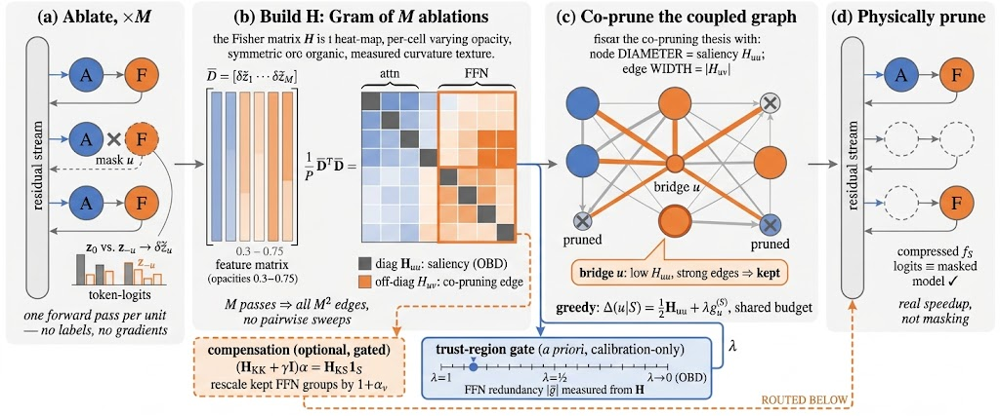

Why it matters왜 중요한가
Structured pruning is the compression family that actually gives you speed on ordinary hardware — you remove whole heads and channel groups, so the model stays dense and needs no sparse kernels. The catch is that the field has been ranking units with a scoring function that quietly assumes independence.
구조적 프루닝은 일반 하드웨어에서 실제로 속도 이득을 주는 압축 계열이다. 헤드와 채널 그룹을 통째로 제거하므로 모델이 dense하게 남고 별도의 sparse 커널이 필요 없다. 문제는 이 분야가 지금껏 "독립성"을 조용히 가정한 점수 함수로 유닛의 순위를 매겨 왔다는 것이다.
This paper's contribution is less a new heuristic than a change of object. Prior interaction-aware attempts reached for proxies like activation correlation — but correlation is not pruning dependence; it can be driven by activation scale or by two units co-firing on common tokens. CoCurve instead derives the interaction from the pruning objective itself. Define the risk as the KL divergence between the frozen full model and its masked copy on unlabeled calibration text. At zero pruning the student is the teacher, so both the value and the gradient vanish — the expansion is purely quadratic, and the Hessian's diagonal recovers classical OBD saliency while the off-diagonal is a quantity nobody had been measuring: the co-pruning curvature. The payoff shows up exactly where it should — on the fragile generative tasks (code) that most pruning papers quietly omit, and at aggressive ratios where every independent-scoring method falls off a cliff.
이 논문의 기여는 새로운 휴리스틱이라기보다 대상 자체의 교체다. 기존의 상호작용 고려 시도들은 활성값 상관관계 같은 대리 지표에 의존했지만, 상관관계는 프루닝 의존성이 아니다. 활성값의 스케일이나 흔한 토큰에서 두 유닛이 함께 발화하는 것만으로도 커질 수 있다. CoCurve는 대신 상호작용을 프루닝 목적함수 자체에서 유도한다. 리스크를 "고정된 원본 모델과 마스킹된 사본 사이의 KL 발산"으로 정의하면, 프루닝이 0일 때 학생=교사이므로 함숫값과 그래디언트가 동시에 사라진다. 따라서 전개식이 순수한 2차 형식이 되고, 헤시안의 대각 성분은 고전적 OBD 중요도를 그대로 복원하는 한편 비대각 성분은 아무도 측정하지 않던 양, 즉 co-pruning curvature가 된다. 그 효과는 정확히 나와야 할 곳에서 나타난다 — 대부분의 프루닝 논문이 슬쩍 빼놓는 취약한 생성 과제(코드), 그리고 모든 독립 스코어링 기법이 절벽처럼 무너지는 고압축 구간이다.

By the numbers핵심 숫자
The headline table핵심 표
| Method | Wiki ↓ | C4 ↓ | Cmn. ↑ | MMLU ↑ | HEval ↑ | MBPP ↑ |
|---|---|---|---|---|---|---|
| Dense (0%) | 6.40 | 10.67 | .699 | .478 | .610 | .556 |
| Wanda-sp | 20.02 | 30.09 | .569 | .356 | .049 | .002 |
| SlimGPT | 19.24 | 29.19 | .554 | .351 | .000 | .004 |
| SlimLLM | 17.36 | 29.36 | .574 | .372 | .037 | .002 |
| 2SSP | 16.29 | 29.00 | .580 | .379 | .043 | .100 |
| LLM-Pruner | 13.23 | 21.98 | .586 | .368 | .061 | .066 |
| CoCurve (ours) | 12.91 | 21.52 | .610 | .389 | .073 | .110 |
The three ideas doing the work핵심을 떠받치는 세 가지 아이디어
Curvature, not correlation
Because the masked model equals the full model at s=0, the KL risk has zero value and zero gradient there, so the second-order expansion is exactly ½sᵀHs with nothing left over. That makes H the honest object: Huu is per-unit saliency, Huv is the extra distortion from removing u and v jointly. Positive means they compound; negative means their perturbations partly cancel and you can afford both.
s=0에서 마스킹된 모델이 원본과 같으므로 KL 리스크의 값과 그래디언트가 동시에 0이 되고, 2차 전개는 잔여항 없이 정확히 ½sᵀHs가 된다. 덕분에 H가 정직한 대상이 된다. Huu는 유닛별 중요도, Huv는 u와 v를 함께 제거할 때 추가로 생기는 왜곡이다. 양수면 피해가 가중되고, 음수면 섭동이 부분적으로 상쇄되어 둘 다 지워도 된다는 뜻이다.
M ablations buy M² edges
The move that makes this practical. Assume logit shifts are additive across units, whiten each single-unit shift into a probability-weighted mean-centred feature on the teacher's shared top-r logit coordinates, and the Fisher inner product collapses into an ordinary dot product. The full M×M matrix is then just a Gram product of M ablation features — quadratic information at linear cost.
이 방법을 실용적으로 만드는 핵심 수. 유닛별 로짓 변화가 가법적이라 가정하고, 각 단일 유닛의 변화를 교사 모델이 공유하는 top-r 로짓 좌표 위에서 확률 가중·평균 중심화된 특징으로 백색화하면, Fisher 내적이 평범한 내적으로 무너진다. 그러면 M×M 전체 행렬은 M개 ablation 특징의 Gram 곱에 불과하다 — 선형 비용으로 2차 정보를 얻는 셈이다.
A trust region that admits its own limits
A quadratic expansion is local, and the authors don't pretend otherwise. An interaction strength λ ∈ [0,1] scales the edge term — λ=1 is the full model, λ=0 degenerates to plain OBD. Proposition 1 predicts the optimal λ should fall as the pruning ratio rises, and the empirical sweeps agree. Better still, λ is set a priori from a calibration-only statistic (mean off-diagonal FFN correlation), not tuned on the test set.
2차 전개는 국소적이며, 저자들도 이를 숨기지 않는다. 상호작용 강도 λ ∈ [0,1]이 엣지 항의 크기를 조절한다 — λ=1이면 전체 모델, λ=0이면 순수 OBD로 퇴화한다. Proposition 1은 프루닝 비율이 커질수록 최적 λ가 작아져야 한다고 예측하고, 실험적 스윕도 이에 부합한다. 더 나은 점은 λ를 테스트셋으로 튜닝하지 않고 캘리브레이션만으로 얻는 통계량(FFN 비대각 상관 평균)에서 사전에 정한다는 것이다.
How it works어떻게 작동하나
- Ablate once per unit. 유닛마다 한 번씩 ablation. Run the calibration set through the frozen model, then again with each single unit masked, recording only the top-r token-logit shift. M forward passes total — no labels, no backward pass, and embarrassingly parallel.고정된 모델에 캘리브레이션 데이터를 한 번 통과시키고, 이어 각 유닛을 하나씩 마스킹하며 top-r 토큰-로짓 변화만 기록한다. 총 M번의 순전파이며, 레이블도 역전파도 없고 완전 병렬화가 가능하다.
- Whiten and Gram. 백색화 후 Gram. Convert each shift to its Fisher-whitened form and take D̄ᵀD̄. Out comes the entire interaction matrix, diagonal and off-diagonal together, without ever ablating a pair.각 변화를 Fisher 백색화 형태로 바꾼 뒤 D̄ᵀD̄를 계산한다. 쌍을 한 번도 ablation하지 않고도 대각·비대각을 포함한 상호작용 행렬 전체가 나온다.
- Set λ from redundancy, then walk the graph. 중복도로 λ를 정하고 그래프를 훑는다. Read the FFN redundancy statistic off H to pick λ, then greedily remove the unit minimising the cost-normalised marginal risk (½Huu + Σv∈SHuv)/cu, updating a running accumulator in O(M) per step. Attention and FFN draw from one shared budget, so the per-type split is decided by the objective rather than fixed by hand.H에서 FFN 중복도 통계량을 읽어 λ를 고른 뒤, 비용 정규화된 한계 위험 (½Huu + Σv∈SHuv)/cu를 최소화하는 유닛을 탐욕적으로 제거한다. 누적항은 매 단계 O(M)으로 갱신된다. 어텐션과 FFN은 하나의 공유 예산에서 가져가므로 타입별 배분이 사람이 아니라 목적함수에 의해 결정된다.
- Optionally compensate, then physically remove. 필요하면 보상하고, 물리적으로 제거. At aggressive ratios, solve one small ridge system on the already-computed H blocks to rescale the surviving FFN groups — closed form, no weight inverse, no gradients. Then delete the units for real: 0.83× parameters and peak memory on the 8B, and 1.15× prefill / 1.09× decode throughput.고압축 구간에서는 이미 계산된 H 블록으로 작은 릿지 시스템 하나를 풀어 살아남은 FFN 그룹을 재스케일한다 — 닫힌 형식이며 가중치 역행렬도 그래디언트도 필요 없다. 이후 유닛을 실제로 삭제한다. 8B 기준 파라미터·최대 메모리 0.83배, prefill 1.15배 / decode 1.09배 처리량이다.
The ablation that earns the paper이 논문을 정당화하는 실험
Two results are worth more than the leaderboard. First, an ablation that keeps within-module edges (attn–attn, FFN–FFN) but zeroes the cross-module attn↔FFN block performs worse than the pure diagonal method — a partial edge model is not a weaker version of the full one, it is an incoherent geometry. Second, a matched-pair causal test: the 87 low-saliency units with the highest connectivity, versus a control matched on saliency, type and cost, both completed by the identical greedy fill to the same realised ratio (0.2007). Forcing out the bridge units costs 10.5 MMLU points and takes MBPP from .075 to zero. Notably, perplexity moves the other way (21.2 vs 23.3) — the authors flag this as expected for a node-first proxy, which is also a quiet warning that perplexity is the wrong instrument for this question.
리더보드보다 값진 결과가 둘 있다. 첫째, 모듈 내부 엣지(attn–attn, FFN–FFN)는 유지하고 모듈 간 attn↔FFN 블록만 0으로 만든 ablation은 순수 대각 기법보다도 나쁘다. 부분적인 엣지 모델은 완전한 모델의 약한 버전이 아니라 아예 일관성이 깨진 기하 구조라는 뜻이다. 둘째, 매칭 쌍 인과 검정: 연결도가 가장 높은 저중요도 유닛 87개와, 중요도·타입·비용을 맞춘 대조군을 두고 동일한 탐욕적 채우기로 같은 실현 비율(0.2007)까지 완성했다. 브리지 유닛을 강제로 제거하면 MMLU가 10.5점 떨어지고 MBPP는 .075에서 0이 된다. 주목할 점은 perplexity는 반대로 움직인다는 것이다(21.2 vs 23.3). 저자들은 노드 우선 대리 지표에서는 예상된 현상이라고 밝히는데, 이는 동시에 perplexity가 이 질문에 잘못된 계측기라는 조용한 경고이기도 하다.
What to take away그래서, 가져갈 것
The Gram trick generalises well beyond pruning. Any time you need pairwise interaction structure over a set of interventions and each intervention's effect is roughly additive in some linear readout, you can buy M² relationships for M probes. Worth stealing for expert selection in MoE, layer-skipping policies, or rank allocation across projections.
Gram 트릭은 프루닝을 훨씬 넘어 일반화된다. 어떤 개입 집합에 대해 쌍별 상호작용 구조가 필요하고 각 개입의 효과가 어떤 선형 판독값에서 대략 가법적이라면, M번의 탐침으로 M²개의 관계를 살 수 있다. MoE의 전문가 선택, 레이어 스키핑 정책, 프로젝션 간 랭크 배분에 훔쳐 쓸 만하다.
"Bridge units" deserve a name in the compression vocabulary: individually dispensable, collectively load-bearing. Any method that ranks-then-cuts will keep deleting them, and perplexity will not tell you it happened — only capability benchmarks will.
"브리지 유닛"은 압축 어휘에 이름을 가질 자격이 있다. 개별적으로는 없어도 되지만 집합적으로는 하중을 지탱하는 유닛이다. 순위를 매겨 자르는 방식의 어떤 기법이든 이들을 계속 지우게 되며, perplexity는 그 사실을 알려주지 않는다 — 능력 벤치마크만이 알려준다.
Include code and math in your pruning evaluation. This paper's entire margin lives in the tasks most structured-pruning papers omit; on WikiText alone CoCurve would look like a 2% improvement rather than a qualitative one.
프루닝 평가에 코드와 수학을 포함하라. 이 논문의 마진 전체가 대부분의 구조적 프루닝 논문이 빼놓는 과제군에 존재한다. WikiText만 보면 CoCurve는 질적 차이가 아니라 2% 개선처럼 보일 것이다.